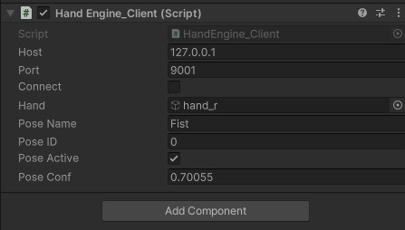

StretchSense Hand Engine software
Unity 2020 LTS or later installed
StretchSense Unity Plugin: Download the most up-to-date Plugins from the Downloads Section of your StretchSense Account at http://www.stretchsense.com/my-account
Setup the streaming link from Hand Engine to Unity: https://stretchsense.my.site.com/defaulthelpcenter26Sep/s/article/Fidelity-and-SuperSplay-Glove-Unity-Streaming
Operating System: Windows 10 or later
1- Once the streaming from Hand Engine to Unity has been set up, trigger the Play Mode and check the Hand Engine Client script.
2- The script will update to the current active pose:
